AI 伺服器電力架構升級 × 車用電子規格提升 × 日系龍頭漲價
台灣 30+ 家公司深度解析，找出本波行情最受惠的關鍵位置
不以主動放大為主要功能，負責儲能、耗能、濾波、耦合、諧振、保護、阻抗匹配的元件家族
厚膜・薄膜・電流感測・排阻・金屬板
MLCC・鉭電・鋁電解・固態・Hybrid・薄膜・安規
功率電感・磁珠・共模濾波・TLVR・高頻RF電感
PPTC・MOV/GDT・ESD/TVS・eFuse
Crystal・XO/VCXO/TCXO・SAW/BAW・晶片天線
陶瓷粉末・鋁箔・銀漿・磁材・代理商
| 公司 | 主分類 | 主要產品 | 市占/地位 |
|---|---|---|---|
| 國巨 2327 | 綜合平台 | MLCC、鉭電容、晶片電阻 | 晶片電阻全球第1；鉭電容全球第1（>46%） |
| 華新科 2492 | 綜合平台 | 陶瓷電容、電阻、電感、RF | 未公開 |
| 禾伸堂 3026 | MLCC | 高壓高容 NP0/X7S/X8M MLCC | 未公開 |
| 信昌電 6173 | MLCC/上游材料 | MLCC、電阻、電感、陶瓷粉末 | 未公開 |
| 立隆電 2472 | 鋁電/Hybrid | OP-CAP、Hybrid、SMD鋁電、EDLC | 未公開 |
| 鈺邦 6449 | 固態/Hybrid | 導電高分子片式固態電容、SMLC | 未公開 |
| 金山電 8042 | 鋁電 | 鋁電解電容、高值化產品 | 未公開 |
| 臺慶科 3357 | 電感/磁材 | 功率電感、TLVR | 未公開 |
| 鈞寶 6155 | 電感/EMI | EMI鐵氧體、功率電感、共模抗流圈 | 未公開 |
| 千如 5215 | 電感/變壓器 | 車規電感、TLVR、共模濾波、LTCC | 未公開 |
| 希華 2492 | 頻率元件 | XO、TCXO、VCTCXO、高頻振盪器 | 未公開 |
| 台嘉碩 3264 | 頻率/RF | SAW、BAW、石英振盪晶體、天線 | 未公開 |
| 興勤 2428 | 保護元件 | NTC/PTC/PPTC、Varistor、GDT、TVS | 未公開 |
| 聚鼎 6224 | 保護元件 | PPTC、Fuse、eFuse、熱管理 | 亞洲第一間專業PPTC製造商 |
| 日電貿 2428 | 通路 | 代理陶瓷電容、固態電容、電解電容 | 台灣最大被動元件代理商 |
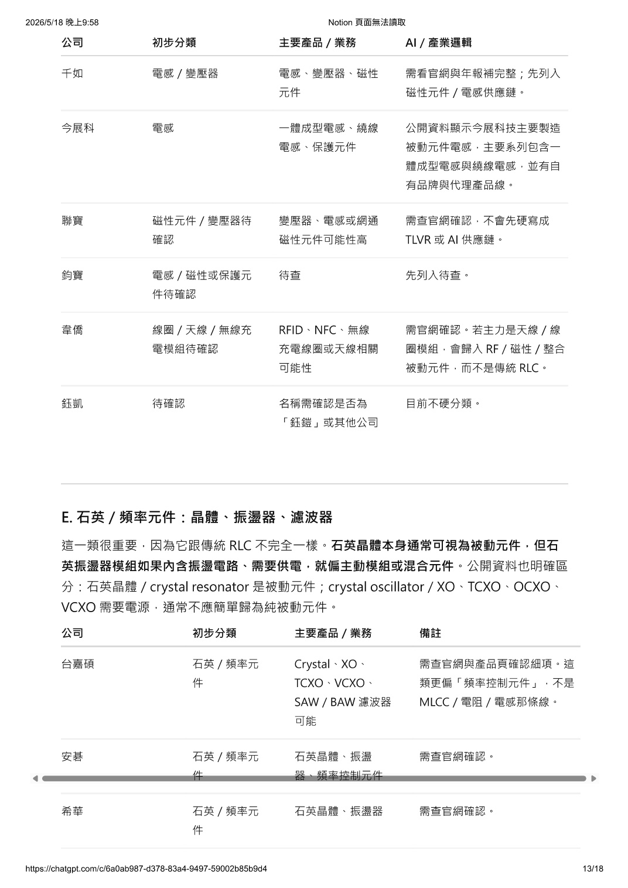
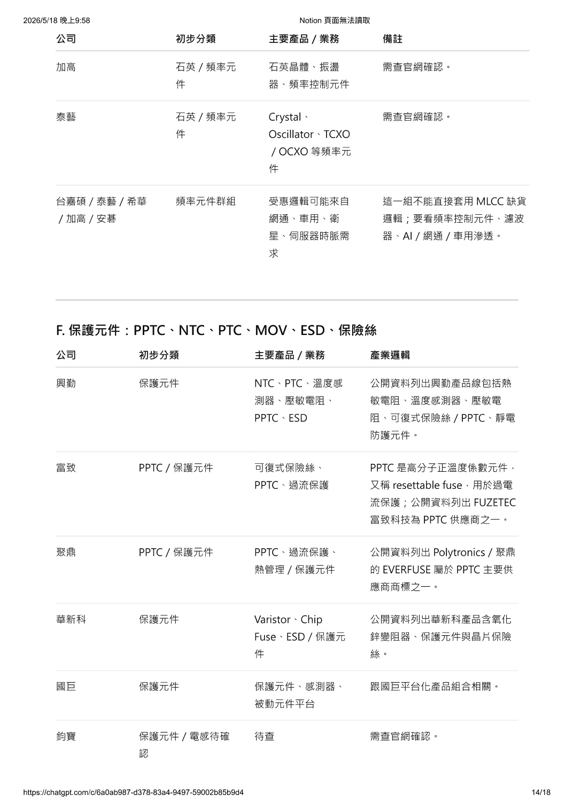
本輪行情不是「缺貨恐慌」，而是 AI 功率架構升級 × 規格提升 × 供應重分配的結構性循環
NVIDIA 把 800VDC 定為下一代 AI 資料中心架構，降低電流、減少銅用量；Vertiv 稱此為未來十年 AI 基礎設施的定義性變化。高壓 MLCC、鉭/固態/Hybrid 電容、功率電感、保護元件全面升規。
Murata FY2025/26 財報：伺服器帶動電容與 EMI 濾波器成長。YAGEO 指出鉭電容與磁芯材料切入 AI 效率議題。光頡 AI 營收占比由 5% 升至 12%，漲幅約 30%-35%。
Murata 供應全球約 40% MLCC；其財報顯示資料中心電容需求強勁並規劃進一步投資。龍頭把資源投向高階品，造成一般品被擠壓 — 2026 年最熱門的「commodity squeeze」話題。
TrendForce：Murata 2026 年 4 月起調漲磁珠、功率電感、RF 電感、共模電感，主因銀價上升。Taiyo Yuden 自 5 月起調漲部分 MLCC、電感、磁珠、RF 元件與鋁電。
日電貿年報：2024 年陶瓷電容佔營收 47.37%、固態電容 21.08%。部分高階被動件交期拉長至 52 週。當原廠漲價、交期拉長，代理商的品牌組合、庫存管理與配額分配能力被重新估值。
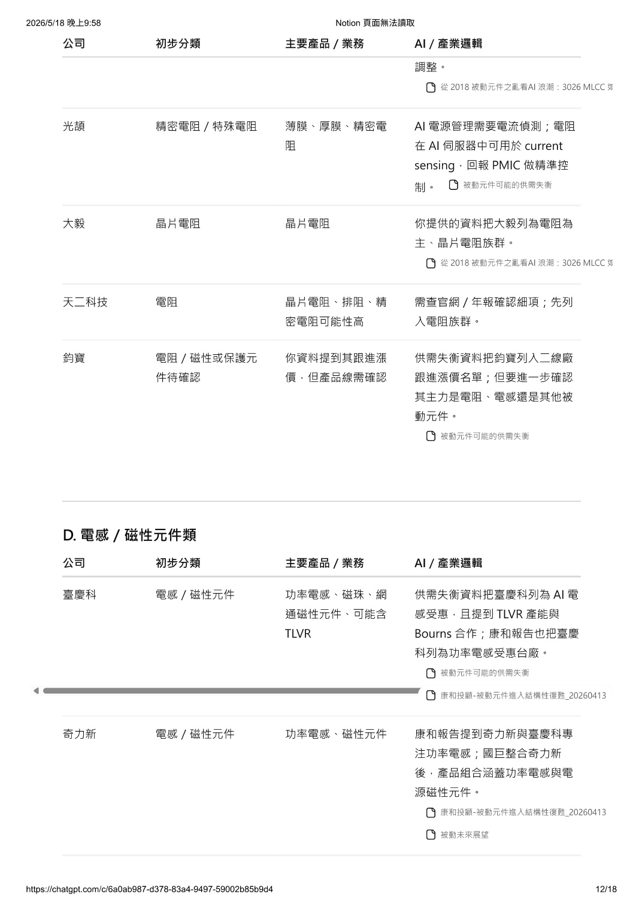
電阻、電容、電感的功能、種類、AI 時代投資邏輯
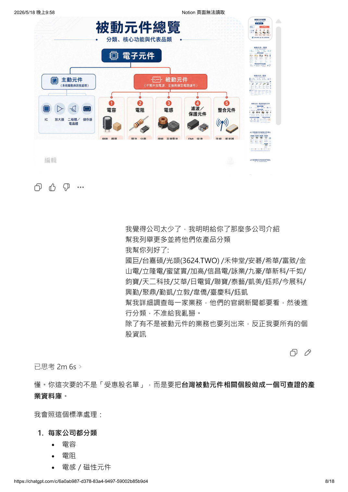
儲存電荷、穩壓、濾波、去耦
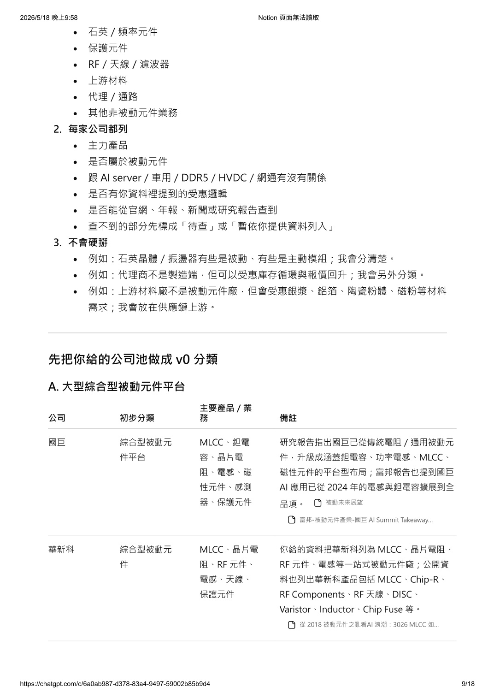
限流、分壓、保護電路、電流偵測
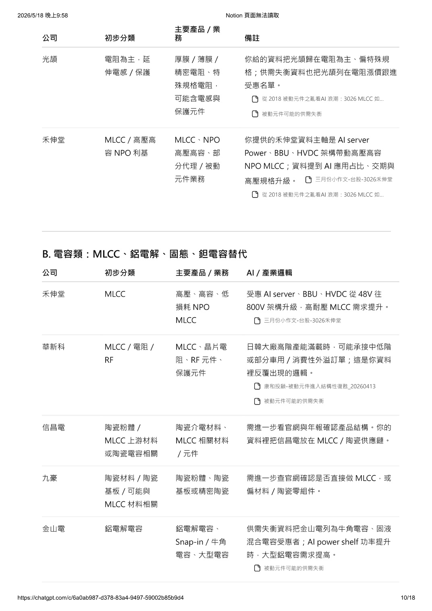
儲能、平滑電流、抑制雜訊、EMI 控制
從市電輸入到 GPU/CPU 晶片，每一級供電都需要被動元件升規
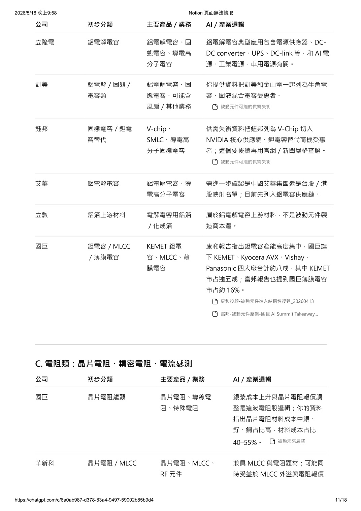
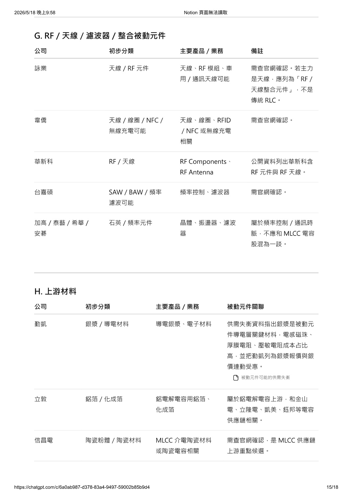
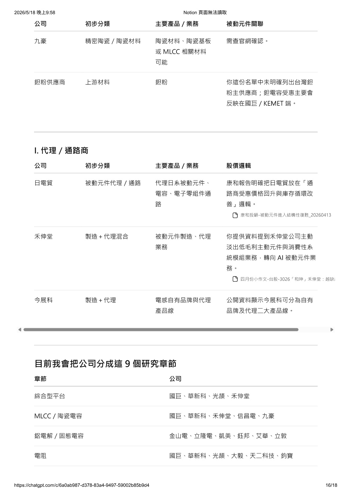
按產品類別解析受惠強度與關鍵公司，不是「所有被動元件一起漲」
投資邏輯不是看出貨量，而是看高壓、高容、高溫、低損耗的乘數效果。禾伸堂強調 AI Server Power 朝 800V HVDC，NP0/X7S/X8M 是必要核心。信昌電具備 MLCC + 上游粉末一體化優勢，AI 交期拉長至 16 週，訂單能見度超 6 個月。
在高可靠、高溫、高容、高體積效率應用中仍有不可替代性。YAGEO 年報：鉭電容全球市占逾 46%，重點市場為汽車、工業、軍工、航太、醫療、高階電腦。不是老產品，而是高可靠領域的 premium capacitor。
關鍵不再只是循環補庫存，而是電源架構升級。AI GPU 板導入 Hybrid 與 Polymer，立隆電 AI 比重可望倍數成長。鈺邦直接把固態電容定位在 DC/DC 轉換器、電壓調節器近載場景；啟動擴產，朝 Rubin 平台送樣。
AI/伺服器/DDR5 升規後，轉為精密化、高功率化、低阻值化、大電流電流感測化。光頡是薄膜精密電阻 + 電流感測 + 高頻電感的複合平台，AI 升規不只吃一個品類。銀價持續高檔對具備 price pass-through 的薄膜廠更有利。
TLVR 是本輪行情中最容易被低估的品類。AI 伺服器近載 VRM 需要更快瞬態響應與更高電流密度，TLVR 可明顯改善瞬態響應並減少電容用量。臺慶科與千如已把 TLVR 商品化；Murata/Taiyo Yuden 對磁珠與功率電感喊漲，定價權重回。
資料中心互連速度拉高、交換器升級、LEO 與 GNSS 精度提升時，低相噪、低抖動、高穩定時脈就是 premium timing market 的核心。希華官網直指 XO/TCXO 用於資料中心、伺服器、交換器與光模組。
高電流、高密度、高價值主動晶片變多，容錯成本急升。保護元件不是配角，而是越來越偏向可靠度的必要採購。富致把 PPTC 與新一代功率半導體連結 AI/EV；聚鼎從 PPTC 升級到 eFuse/熱管理，單價提高。
通路股的邏輯最容易被忽略。三件事同時出現：高階品牌組合、庫存重估、配額與交期管理價值提升。蜜望實是 Taiyo Yuden 正規經銷商，主業是 MLCC 與電感代理。當原廠調價且客戶需要快速配料，通路商的評價通常放大。
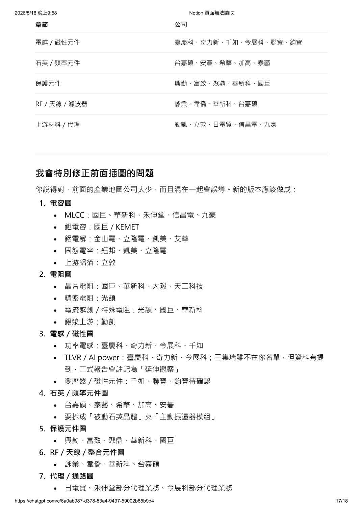
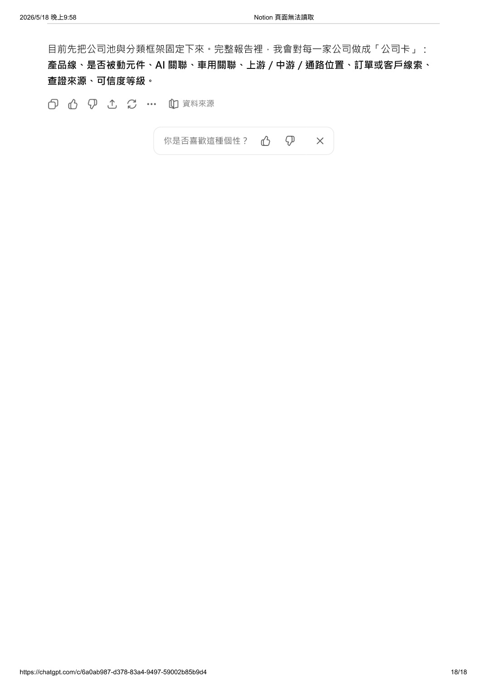
30+ 家台股被動元件公司分類解析，按類別篩選
依 AI曝險、車用曝險、漲價轉嫁、供給稀缺、通路/平台優勢 5 維度評分（0-5分）
| 公司 | AI曝險 | 車用曝險 | 漲價轉嫁 | 供給稀缺 | 通路/平台 | 總分 |
|---|